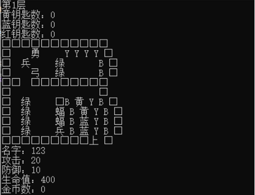
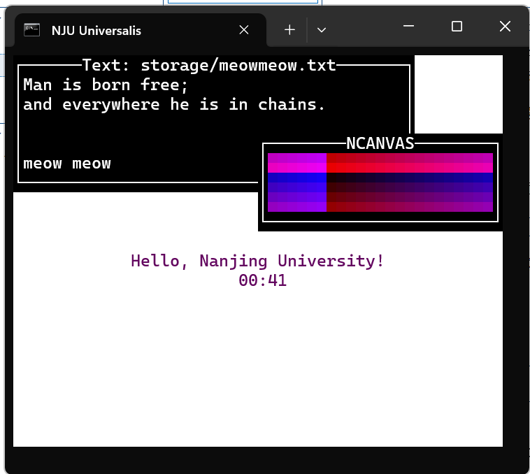
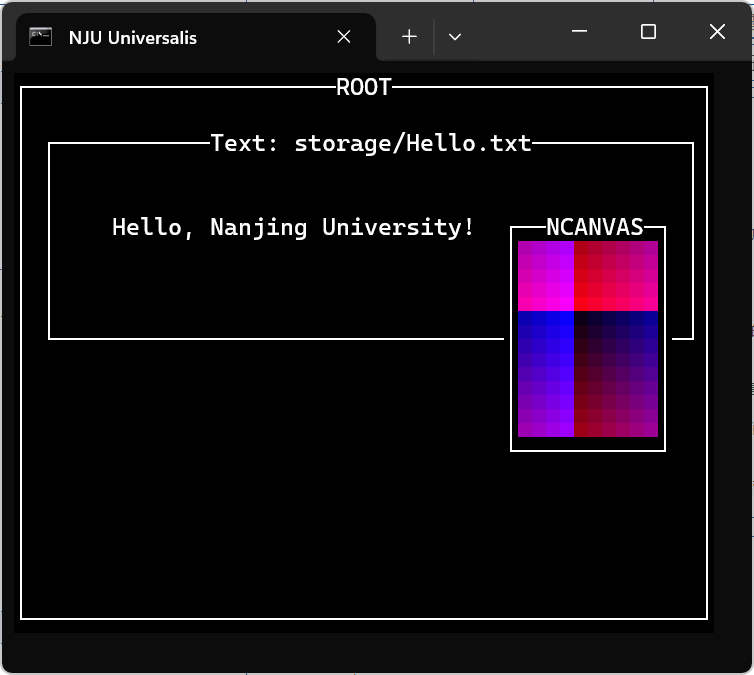

第零阶段¶
引入¶
我们的大作业使用的是一款名为 minitui 的教学用 TUI 框架。
相比普通的教学用控制台项目，minitui 界面美观，交互友好，功能强大。
同时，它还更接近一个「真实的」工程项目，设计更加完善和模块化，可维护性和可拓展性较好。
具体来说……
- 界面美观：
- 基于 ANSI 转义序列支持的真彩色（1677 万色）显示，五彩斑斓。
- 基于 Unicode 绘制的方形像素，边框等组件，质感真实。
- 交互友好：
- 异步/非阻塞的用户 I/O，且基于时钟事件可实现计时器/回调功能。
- 基于 ANSI 转义序列，可实现鼠标事件的获取。
- 功能强大：
- 具备组件系统，可实现多窗口 & 窗口管理 & 窗口框架等种种 GUI 特性，可以模拟真实的 GUI 体验。
- 结合事件系统 & 绘制系统，组件可具有真彩画布和强大交互能力，能够渲染多媒体内容 & 游戏。
- 工程设计
- 有限使用了 C++ 的面向对象设计/泛型特性，在保持语法简单的同时保证复用性/拓展性，降低开发难度。
- 基于装饰器机制的组件 proxy 设置，能够动态为组件添加性质（装饰器）。
- 未来还将推出不需重新编译的动态加载组件机制，可实现基于布局文件 & DLL 文件创建组件或窗口框架。
单元测试（待加入）
我们的目的是使得大家能够通过在这一框架上进行大作业开发：
- 锻炼代码能力：设计可用代码的能力，阅读他人代码的能力，产出可读代码的能力。
- 锻炼工程能力：学习小型项目的设计方法和开发流程，包括使用 git 进行项目管理等。
- 培养兴趣：通过独立开发一个好看且新颖的程序收获成就感。
|  |  |
|---|---|
| 传统的教学控制台项目 demo | 使用 minitui 框架的项目 demo |
接下来我们就看看如何在 minitui 上进行开发吧！
准备工作¶
首先先从 github 拉取第零阶段代码。
git clone -b phase0 https://github.com/ps24-prog/project1
按照 readme.md 的指示配置好环境并在 make -j8 shell 以后执行 game 运行 demo。
第一个 minitui 程序¶
拉取代码，跑完 demo 以后就可以开始撰写第一个 minitui 程序了。
将 Makefile 的 STAGE 变量改成 test/phase0，然后执行 make clean。
在 test/phase0/source/main.cpp 中写入如下内容：
// minitui.h 中包含了 C++ 常用库和所有 minitui 提供的对象 & 接口
#include <minitui.h>
// 程序主函数，需要接受命令行提供的参数
int main(int argc, char *argv[]) {
// 调用 minitui 的初始化接口处理命令行参数并进行必要的初始化
tui_init(argc, argv);
// 设置你喜欢的窗口标题
ansi_title("NJU Universalis");
// 启动主事件循环
int ret_value = tui_exec();
// 处理异常返回值
if (ret_value != 0)
Warn("tui_exec() returns with a non-zero value %d", ret_value);
return ret_value;
}
执行 make -j8 shell，进入游戏启动器后输入 game 回车。
如果一切正常，你会看见一个黑洞洞的窗口，该窗口会在你按下 Ctrl+C 时退出。
OK，这就是我们创建的第一个可运行的 minitui 程序。
虽然无聊，但是我们此时可以借机介绍一些 minitui 机制——为什么按下 Ctrl + C 时会退出？怎么进行进一步开发？
组件 & 窗口系统入门¶
和大部分 GUI 框架一样，组件（tui_widget）是 minitui 的核心概念。
为什么是和 GUI 框架一样？
因为 minitui 的目的其实就是在终端上实现一个简易 GUI。
继续看下去你会发现，我们总是在借鉴/模仿/实现 GUI 的概念。
通俗来讲，组件就是屏幕上某个位置一块看得见，能操作的东西。
形式化地说，作为和用户交互和显示的基本单元，组件的三大核心特点/功能是：
- 占据一定区域。
- 具有特定可绘制内容。
- 能够响应事件并作出变化。
和组件密切相关的概念是窗口。
在 minitui 中，组件最终都要以窗口的形式呈现，任何窗口本身也是一个组件。
在这里，我们先认为所有组件都是窗口组件，后面我们会接触到非窗口组件。
窗口树¶
窗口有父子关系，所有窗口之间的父子关系形成一棵树，并且有一个唯一的根。
每个窗口都可以创建子窗口，并且在其子窗口退出时会特殊通知——类似一种特殊的事件响应。
窗口显示机制¶
为了显示出窗口，我们需要将窗口注册到窗口管理器中（通过 tui_reg_widget()），后者会根据窗口的区域和覆盖关系（如何维护我们之后再谈），通过调用组件绘制接口绘制整个屏幕。
当然啦，我们知道屏幕是一个由字符格构成的二维画布，而窗口区域也是这样的二维矩形，全局和窗口绘制都是以字符格为单位的。
讲到这点，是因为要说明当我们后续在绘制时提到「位置」就是指一个（离散的）字符格坐标，「区域」就是指两个这样的坐标确定的一个字符格矩形——可以参考 geometry 模块的定义。
窗口事件机制¶
为了和用户交互，事件循环会在接受到事件时：
- 如果是特殊事件，特殊处理。
- 如果不是，交给目前的焦点窗口处理，如果返回了新事件或者窗口退出 - 就交给其父窗口处理，直到没有父窗口或者没有了事件为止。
组件类和根组件¶
可以看到，围绕着组件和窗口这两个 GUI 的基础概念，我们已经有了一个事件/绘制系统的雏形。
不过现在还是让我们关注组件系统吧。
在对整个组件系统及其对接系统有了基本概念以后，我们就可以看懂 tui_widget 的主要属性和接口了：
struct tui_widget {
char name[64]; // 组件名称
tui_rect area; // 在屏幕上占据的区域
tui_widget *parent; // 父窗口
bool instaniated; // 是否作为窗口被注册
std::vector<tui_widget *> children; // 孩子们
// 构造函数
tui_widget(tui_rect area=global_rect, const char *name=NULL, tui_widget *parent=NULL);
// 增加一个子窗口，并将它注册到窗口管理器中
tui_widget *create_widget(tui_widget *widget);
// 增加一个子窗口
tui_widget *add_widget(tui_widget *widget);
// 响应事件：输入一个事件，返回另一个事件
virtual tui_event *on_event(tui_event *event);
// 绘图：绘制给定的位置（注意是相对的）
virtual void draw(tui_point point) const;
// 特殊的事件：子窗口的退出
virtual tui_event *on_child_exit(tui_widget *child);
};
什么是类？什么是组件类？
我假定大家有基本的面向对象常识（补习班讲过了）。
不过这里还是再提一嘴：
类是一种自定义数据类型，我们把用这些类型定义的变量叫做对象，对象具有其类定义的属性和方法。
组件类定义了所有组件对象共有的属性/方法，使得属于组件类的对象（实例）都具有一些相同的交互方式。
本文可能会混用接口和方法。具体原因在此展开就有点长了，暂且不表。
我们看到的那个「黑洞洞」的画面，其上其实是有一个窗口/组件的，即 root。
根组件在全局都可访问，并在 tui_widget_init() 中初始化：
// 全局指针，指向当前的窗口树的根
tui_widget *root;
void tui_widget_init() { // 在 `tui_init()` 中被调用
root = new tui_widget(global_rect); // 覆盖整个屏幕
strcpy(root->name, "ROOT"); // 设置名字
root->reset_block = true; // 置于最底层，不可获取焦点
tui_reg_widget(root); // 将组件注册到窗口管理器中显示出来
}
之所以叫它根组件，是因为它是唯一是窗口而 parent 为 NULL 的组件，也即是窗口树的根。
接下来让我们看看根组件的实现（它就是一个 widget 类的实例）：
// event blackhole
tui_event *
tui_widget::on_event (
tui_event *event
) {
if (!event) {
Warn("A NULL event given!");
}
delete event;
return NULL;
}
// void
void
tui_widget::draw (
tui_point point
) const {
putchar(' ');
}
OK，非常的朴实无华：
事件：它对任何事件都不作响应且直接返回空。
绘制：它在区域内任何位置都输出空格。
事件系统入门¶
现在我们还需要解决一个问题：为什么按 Ctrl + C 会退出呢？
这就要介绍我们的事件系统了。
其实，「事件系统」四个字听起来比较高大上，其实其主体部分也就是响应用户的键鼠输入罢了。
而对于终端（仿真器）来讲，键盘和鼠标输入都会被处理后送入 stdin 标准输入，并能被 getchar() 之类的接口获取。
tui_terminal_init() 会把终端调教成一个能够按照特定形式翻译键鼠输入的模式，可以参考 ctlseqs ，不过我们现在不需要关心细节，只需要知道键鼠事件都能被以字符为单位获取就行了。
特别是键盘事件，大部分键盘事件都直接被翻译为对应的 ASCII 码表示的单个字符。
——就比如 Ctrl + C，它被翻译为 \x3。
特殊事件一般以 ESC 字符开头，我们这里就不细究其处理。
当然，我们还需要有一个描述事件的数据结构，一个简单的方案是拆成事件类型和事件体。
事件体可以有不同的类型——统一用一个 void * 指针来表示，需要用到的时候再进行转换。
enum tui_event_type {
TUI_NO_EVENT,
TUI_KEYBD_EVENT,
TUI_MOUSE_EVENT,
TUI_TIMER_INTERUPTER_EVENT, // no body
TUI_EXIT_EVENT,
TUI_PASTE_EVENT
};
// 各种事件类型，可以具体查看格式
struct tui_mouse_event;
struct tui_paste_event;
struct tui_kbd_event;
struct tui_exit_event;
struct tui_event {
int event_type;
void *event_body;
tui_event(int event_type, void *event_body)
: event_type(event_type)
, event_body(event_body)
{}
};
想要构造一个新的事件，只需创建一个 tui_event，指定其类型和事件体即可。
结合上文所述，获取事件的函数就容易读懂了：
tui_event *
tui_get_event() {
char ch = tui_getchar();
switch (ch)
{
// ESC 特殊事件
case ESC_CODE: {
return tui_get_ansi_event();
}
// ^C 退出
case '\x3': {
return new tui_event(
TUI_EXIT_EVENT,
new tui_exit_event(0)
);
}
// 其他
default: {
Debug("Get a key %d!", ch);
return new tui_event(
TUI_KEYBD_EVENT,
new tui_kbd_event(ch)
);
}
}
return NULL;
}
因此，Ctrl + C 会退出是因为其会生成一个特殊的 TUI_EXIT_EVENT 事件。
事件循环获取到该特殊事件后，就不经组件处理，直接结束整个事件循环了。
为什么总是用 new？
new 会把对象创建在堆上，并返回指向该对象的指针。
——这意味着对象是全局且持久的，不会因为离开作用域而被销毁。
在 minitui 中，事件，组件等对象都是需要跨作用域传递的且不能被轻易复制的。
因此，需要用 new 来创建唯一全局的实例，并用指针来引用它们。
第二个 minitui 程序：增加功能¶
现在我们已经知道，在第一个程序中已经存在有 root 组件，现在让我们为它添加一些功能。
把代码改成这样：
// minitui.h 中包含了 C++ 常用库和所有 minitui 提供的对象 & 接口
#include <minitui.h>
// 程序主函数，需要接受命令行提供的参数
int main(int argc, char *argv[]) {
// 调用 minitui 的初始化接口处理命令行参数并进行必要的初始化
tui_init(argc, argv);
// 设置你喜欢的窗口标题
ansi_title("NJU Universalis");
// 给根组件添加功能
root->set_attrs(
{
"border shrink", // 具备有边框
"title", // 具备有标题
tui_fmt("quit %d", 'q') // 按 q 退出
}
);
// 启动主事件循环
int ret_value = tui_exec();
// 处理异常返回值
if (ret_value != 0)
Warn("tui_exec() returns with a non-zero value %d", ret_value);
return ret_value;
}
然后在刚刚的 shell 里执行 compile 命令后再执行 game 命令。
（如果你不慎退出了，再 make shell 即可）
现在你会发现 ROOT 组件有了标题和边框，并会在按 q 时退出。
这是怎么做到的呢？我们在这里先不介绍。
只需要记住组件对象的这一方法：set_attrs()。
它接受一个性质字符串 vector，并能够将这些性质（功能）加到组件上。
注：tui_fmt 是一个 sprintf 的封装，能够将其结果字符串直接包装起来，类似字符串类型。
第三个 minitui 程序：创建组件¶
在大部分情况下，root 组件是不需要处理事件的，它就是一个方便处理窗口树的背景板。
root 组件的实现使得它会在所有其他窗口退出时退出：
tui_event *
tui_widget::on_child_exit (
tui_widget *child
) {
// if not root, do nothing
if (this != root) {
return NULL;
}
if (children.size() == 1 && child->children.empty()) {
return new tui_event(
TUI_EXIT_EVENT,
new tui_exit_event(child->retcode)
);
}
return NULL;
}
我们利用 create_widget 接口新建两个 root 的子窗口，并注册到窗口管理器上显示出来：
#include <minitui.h>
int main(int argc, char *argv[]) {
tui_init(argc, argv);
ansi_title("NJU Universalis");
root->set_attrs(
{
"border shrink",
"title",
}
);
// 组件：文本框
root->create_widget(
new tui_textbox(
tui_rect(
global_rect.head + tui_point(1, 1),
global_rect.head + tui_point(global_rect.height() / 3, global_rect.width() - 5)
),
"storage/Hello.txt",
tui_formatter()
)
)->set_attrs(
{
"border",
"title",
tui_fmt("quit %d", 'q'),
"kbd_move"
}
);
// 组件：色阶画布
root->create_widget(
new tui_ncanvas(
tui_rect(
global_rect.tail - tui_point(global_rect.height() / 3 + 1, 10),
global_rect.tail - tui_point(1, 1)
)
)
)->set_attrs(
{
"border",
"title",
tui_fmt("quit %d", 'q'),
"kbd_move"
}
);
int ret_value = tui_exec();
if (ret_value != 0)
Warn("tui_exec() returns with a non-zero value %d", ret_value);
return ret_value;
}
虽然我们介绍过 create_widget()，但对于里面的内容，你可能完全不了解。
别着急，接下来我们来仔细介绍一下。
具体组件实现方式：继承¶
我们知道 create_widget(widget) 的功能是把 widget 作为子窗口注册到窗口管理器上。
但是我们写的代码里用的明明是 tui_ncanvas 和 tui_textbox 啊。
它们是怎么实现的？又是怎么能够被转化为 tui_widget 类型的指针？
这就涉及到面向对象编程中重要的概念：继承。
tui_widget 作为组件类，定义了每个组件对象需要具有的基本属性和接口（见上文）。
但是，我们看到 tui_widget 的对于 on_event() 和 draw() 只有一个最基本实现。
这个基本实现显然是不能满足需求的（显然不是所有组件都和根组件一样是黑洞洞的）。
因此，如果需要实现一个新的组件类型，也许我们需要仿照 tui_widget 实现一个新的类，想想就复杂。然而，好消息是我们不需要从头写起。
C++ 提供了继承机制，我们只需要创建一个新类，令它继承自 tui_widget 即可，继承它的类会自动获得它的所有属性和方法（当然，构造函数除外），还可以定义额外的属性和方法：
struct tui_ncanvas : public tui_widget {
uint8_t boff;
tui_ncanvas(tui_rect area, tui_widget *parent=NULL);
virtual ~tui_ncanvas();
virtual tui_event *on_event(tui_event *event);
virtual void draw(tui_point point) const;
};
这样，我们就得到了 tui_widget 的一个派生类，此时把 tui_widget 称作基类。
上面说过派生类继承基类的所有属性和方法，但同时，我们也可以重载基类的方法。
重载也就是在派生类定义一个和基类某方法相同的方法，然后重新再写一个。
重载使得派生类实例可以在相同的接口上与基类实例有不同的行为，这是继承的主要意义。
tui_ncanvas 重载了 on_event 和 draw 方法，使得它和基类 tui_widget 有不同的行为：
void
tui_ncanvas::draw(
tui_point point
) const {
uint8_t fr, fg, fb, br, bg, bb;
// 渐变色，从左上到右下的图谱
fr = point.x * 2 * 255 / (area.height() * 2) + boff;
fg = 0;
fb = point.y * 255 / area.width() + boff;
br = (point.x * 2 + 1) * 255 / (area.height() * 2) + boff;
bg = 0;
bb = point.y * 255 / area.width() + boff;
auto formatter = tui_formatter(fr, fg, fb, br, bg, bb);
formatter.set();
printf(half_block);
}
tui_event *
tui_ncanvas::on_event(
tui_event *event
) {
Debug("Triggered event on ncanvas");
if (!event || !event->event_body) {
Error("Invalid event given!");
}
if (event->check_key('i')) {
boff += 16;
set_updated();
} else if (event->event_type == TUI_MOUSE_EVENT) {
auto mouse_event = (tui_mouse_event *) event->event_body;
// this->area.log_rect();
if (!mouse_event->get_point().is_in(this->area))
return event;
if (mouse_event->type == MOUSE_LEFT_CLICK && mouse_event->ispress) {
boff += 16;
set_updated();
} else if (mouse_event->type == MOUSE_RIGHT_CLICK && mouse_event->ispress) {
boff -= 16;
set_updated();
}
}
delete event;
return NULL;
}
概括来说，它额外有一个 boff 成员，根据其值来决定它自己区域中每一位置的颜色（draw），并在特定事件时改变 boff 的值（on_event）。
tui_ncanvas 以及 tui_textbox 的实现交由你自己试着读懂，这不是我们叙述的重点。
具体组件归一化：多态¶
在 minitui 中，我们使用继承主要是为了让创建能在相同接口如 on_event 和 draw 等上有不同行为（这也使得它们成为了不同类型的组件）的派生组件（具体组件）对象。
但除了重载它们的接口时，我们通常不关心它们的具体类型，而都想统一调用它们的同名接口（比如事件系统，绘图系统等使用组件指针，并不需要关心 on_event，draw 的具体实现）。
因此我们利用 C++ 实现的多态特性，把它们的指针都当作 tui_widget * 处理。
对于所有这些有共同基类的派生类对象，C++ 保证（在虚函数的前提下，这里不多介绍）能够只用基类指针的引用派生类对象，就可以调用重载后的派生类同名接口。
到这里，继承+多态的组合拳帮助我们实现了两件事：
- 继承使得我们可以重载基类的接口，能够创建在相同接口下表现和基类实例不一样的派生类实例。这让我们能够创造不同的具体组件类。
- 多态使得这些不同的具体组件类在被其它系统处理时能够被当作同一类型（即
tui_widget）处理。这种归一化大大简化了代码逻辑。
组件性质：也是一种归一化¶
回到正题，继续关注创建的两个新组件。
// 组件：文本框
root->create_widget(
new tui_textbox(
tui_rect(
global_rect.head + tui_point(1, 1),
global_rect.head + tui_point(global_rect.height() / 3, global_rect.width() - 5)
),
"storage/Hello.txt",
tui_formatter()
)
)->set_attrs(
{
"border",
"title",
tui_fmt("quit %d", 'q'),
"kbd_move"
}
);
// 组件：色阶画布
root->create_widget(
new tui_ncanvas(
tui_rect(
global_rect.tail - tui_point(global_rect.height() / 3 + 1, 10),
global_rect.tail - tui_point(1, 1)
)
)
)->set_attrs(
{
"border",
"title",
tui_fmt("quit %d", 'q'),
"kbd_move"
}
);
注意到我们还是用了 set_attrs() 接口来增加这些新组件的性质。
还可以发现我们加入了一个新性质 kbd_move，加入该性质后，两个组件可以响应键盘事件，从而在屏幕上移动。你可以观察到它们会互相重叠，可以通过鼠标点击来改变它们的堆叠关系。
可以注意到，对于这两个组件添加性质，我们使用的是完全相同的接口（没有重载 set_attrs）。这样做使得组件性质的逻辑也分离于具体组件实现之外，并且可以完全复用。
这又是一种归一化设计的体现：把程序不同部分/组件的相同逻辑抽象出来封装为同一个接口进行复用。不仅简化了代码，还方便了维护。
create_widget 将创建好的组件对象指针原样返回，方便我们直接在它创建的对象上调用 set_attr() 接口来增加性质，这种设计叫做链式调用。
和之前一样，按 q，焦点所在的窗口会退出，两个都退出后会连带着 root 及整个程序退出。
到这里程序执行的效果如下图：

本阶段任务¶
推荐你在 12/28 前完成本阶段的任务实践：
- 拉取项目代码
- 配置好运行环境并正确运行 demo
- 实践以上内容
后续任务预告 & 建议¶
- 第一阶段：代码框架导读 & 实现小功能练手。推荐 1/10 前完成。
- 第二阶段：实现窗口框架和布局。推荐 1/13 前完成。
- 第三阶段：实现图片查看器。推荐 1/17 前完成。
大作业提交预计在 1/17 前后截止（因为需要在 1/18 左右评分完成），需要提交一份实验报告（markdown/tex/typst 格式均可）。
建议尽量结合教程的讲解和文档（后续会跟进）多读读框架代码，尤其是教程讲解中提到但是没有细说的实现（不可能讲的那么细），最好把其原理都读明白。
当然，其实是三到五天就可以完成全部任务的。